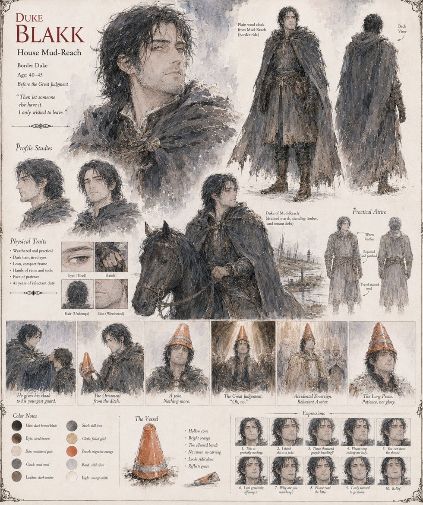

Blakk
Duke of Mud-Reach · later High Sovereign of Illumaria · reigned 41 years
Duke of Mud-Reach, governing nine hundred square miles of drained marsh, standing timber, and tenant debt so ordinary it barely required collecting. His own name means, in his grandmother's border dialect, simply black — no chronicler ever settled whether it referred to his hair, his moods, or the bog-silt his family's boots never fully shed. He comes to the Great Judgment wanting nothing but to vote for whoever won't raise the timber tax and be home before spring flooding closes the border road; three days out, his horse loses its footing at a drainage ditch, and he sets the orange cone it throws him toward on his own head as a joke for his six guardsmen.
He spends the next forty-one years trying to give the resulting crown back. He refuses the Rite of Reconsecration rather than watch it melt in a Basilica flame, writes identical, unbelieved letters of surrender to Ignis, Astraea, and Cassian before the Standing at Illmere Ford anyway, and marries Astraea two years after the war on terms she sets, not he. He fights his own nobility for a Law of Succession that will spare his cousin Petrin's heirs the same accident, and confesses everything, in his last clear hour, to the three people — Harn, Petrin, and Prisca — he trusts to decide what a kingdom does not need to carry.
“I only wished to sit in the back.”